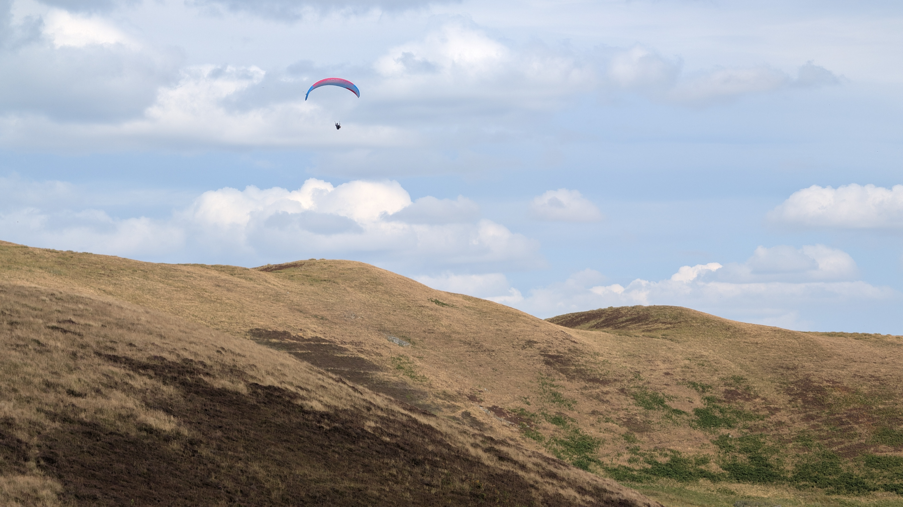

Our Favourite Cycling Routes

Ettrick & Yarrow Valley Circular (short)
A ride up Ettrick Valley with a significant climb over Witchie Knowe down to the Yarrow valley for the return to Selkirk with low traffic and beautiful natural scenery.
📏 32 km
⛰️ Moderate
⏱️ 1 - 2 hrs
Interesting Features Along the Way:
☕ Waterwheel Cafe Award winning Cross Keys Inn Stunning Hilltop Views
On The Trail Of The Tour
A longer tougher route taking in some of the TdF route.
📏 103 km
⛰️ Hard
⏱️ 3 - 4 hrs
Interesting Features Along the Way:
Col de Melrose Riverside views Ancient Abbey
Tweed Heritage Tour
Ride along quiet paved roads connecting local historical landmarks and beautiful river viewpoints.
📏 32 km
⛰️ Moderate
⏱️ 2 - 2.5 hrs
Interesting Features Along the Way:
🏰 Abbotsford House ☕ River View Bakery 🌉 Salmon Leap ViaductInteractive Route & Elevation Profile
Explore the full route map and elevation gain along the way.